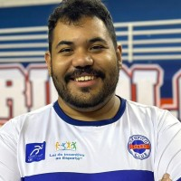

Psicologia, esporte e programação
Oi, sou o Lucas. Aqui estão meus projetos.
Sou psicólogo formado pela UFMG e trabalho no esporte. Comecei a programar para resolver dificuldades da rotina e acabei gostando de criar ferramentas, jogos e análises.

o que aprendi com eles
Portfólio
Projetos.
Alguns projetos já podem ser usados; outros ainda estão em construção. Em cada um, mostro imagens, explico o que fiz e conto o que aprendi.
Sobre mim
01 / trajetóriaComo comecei a programar.
No trabalho com atletas, eu sentia falta de maneiras mais simples de registrar partidas, acompanhar informações e conversar sobre decisões em equipe. Fui criando protótipos para testar essas ideias.
Aprendi a programar enquanto fazia esses projetos. Hoje também crio aplicações fora do esporte. Gosto de entender o problema, fazer uma primeira versão e melhorá-la depois de testar.
Leia mais sobre minha trajetória
Sempre gostei de aprender assuntos diferentes. A psicologia e o esporte continuam presentes no meu trabalho, mesmo quando estou estudando dados ou escrevendo código.
Nem tudo neste site está pronto. Deixei os projetos em andamento porque também quero mostrar o processo, inclusive as versões que precisei refazer.
Tenho interesse em trabalhar com tecnologia e dados, especialmente em projetos nos quais eu possa continuar aprendendo com outras pessoas.
Vamos conversar
Quer falar sobre algum projeto?.
Pode me escrever para trocar ideias, dar um feedback ou conversar sobre trabalho.